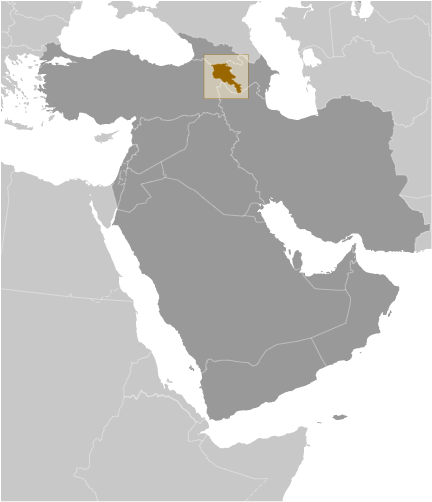
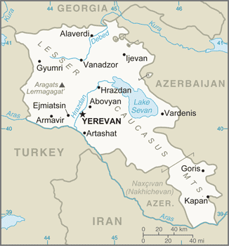
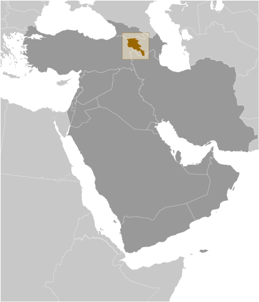
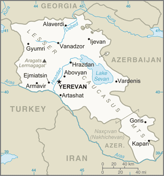

Middle East :: ARMENIA
Introduction :: ARMENIA
-
Armenia prides itself on being the first nation to formally adopt Christianity (early 4th century). Despite periods of autonomy, over the centuries Armenia came under the sway of various empires including the Roman, Byzantine, Arab, Persian, and Ottoman. During World War I in the western portion of Armenia, the Ottoman Empire instituted a policy of forced resettlement coupled with other harsh practices that resulted in at least 1 million Armenian deaths. The eastern area of Armenia was ceded by the Ottomans to Russia in 1828; this portion declared its independence in 1918, but was conquered by the Soviet Red Army in 1920.Armenian leaders remain preoccupied by the long conflict with Azerbaijan over Nagorno-Karabakh, a primarily Armenian-populated region, assigned to Soviet Azerbaijan in the 1920s by Moscow. Armenia and Azerbaijan began fighting over the area in 1988; the struggle escalated after both countries attained independence from the Soviet Union in 1991. By May 1994, when a trilateral cease-fire between Armenia, Azerbaijan, and Nagorno-Karabakh took hold, ethnic Armenian forces held not only Nagorno-Karabakh but also seven surrounding regions - approximately 14 percent of Azerbaijan’s territory. The economies of both sides have been hurt by their inability to make substantial progress toward a peaceful resolution.Turkey closed the common border with Armenia in 1993 in support of Azerbaijan in its conflict with Armenia over control of Nagorno-Karabakh and surrounding areas, further hampering Armenian economic growth. In 2009, senior Armenian leaders began pursuing rapprochement with Turkey, aiming to secure an opening of the border, but Turkey has not yet ratified the Protocols normalizing relations between the two countries. In January 2015, Armenia joined Russia, Belarus, and Kazakhstan as a member of the Eurasian Economic Union.
Geography :: ARMENIA
-
Southwestern Asia, between Turkey (to the west) and Azerbaijan; note - Armenia views itself as part of Europe; geopolitically, it can be classified as falling within Europe, the Middle East, or both40 00 N, 45 00 EAsiatotal: 29,743 sq kmland: 28,203 sq kmwater: 1,540 sq kmcountry comparison to the world: 143slightly smaller than Marylandtotal: 1,570 kmborder countries (4): Azerbaijan 996 km, Georgia 219 km, Iran 44 km, Turkey 311 km0 km (landlocked)none (landlocked)highland continental, hot summers, cold wintersArmenian Highland with mountains; little forest land; fast flowing rivers; good soil in Aras River valleymean elevation: 1,792 melevation extremes: lowest point: Debed River 400 mhighest point: Aragats Lerrnagagat' 4,090 msmall deposits of gold, copper, molybdenum, zinc, bauxiteagricultural land: 59.7%arable land 15.8%; permanent crops 1.9%; permanent pasture 42%forest: 9.1%other: 31.2% (2011 est.)2,740 sq km (2012)most of the population is located in the northern half of the country; the capital of Yerevan is home to more than five times as many people as Gyumri, the second largest city in the countryoccasionally severe earthquakes; droughtssoil pollution from toxic chemicals such as DDT; deforestation; pollution of Hrazdan (Razdan) and Aras Rivers; the draining of Sevana Lich (Lake Sevan), a result of its use as a source for hydropower, threatens drinking water supplies; restart of Metsamor nuclear power plant in spite of its location in a seismically active zoneparty to: Air Pollution, Biodiversity, Climate Change, Climate Change-Kyoto Protocol, Desertification, Environmental Modification, Hazardous Wastes, Law of the Sea, Ozone Layer Protection, Wetlandssigned, but not ratified: Air Pollution-Persistent Organic Pollutantslandlocked in the Lesser Caucasus Mountains; Sevana Lich (Lake Sevan) is the largest lake in this mountain range
People and Society :: ARMENIA
-
3,045,191 (July 2017 est.)country comparison to the world: 137noun: Armenian(s)adjective: ArmenianArmenian 98.1%, Yezidi (Kurd) 1.1%, other 0.7% (2011 est.)Armenian (official) 97.9%, Kurdish (spoken by Yezidi minority) 1%, other 1% (2011 est.)Armenian Apostolic 92.6%, Evangelical 1%, other 2.4%, none 1.1%, unspecified 2.9% (2011 est.)0-14 years: 18.94% (male 306,322/female 270,388)15-24 years: 12.89% (male 203,358/female 189,092)25-54 years: 43.43% (male 640,881/female 681,784)55-64 years: 13.41% (male 187,178/female 221,071)65 years and over: 11.33% (male 138,458/female 206,659) (2017 est.)total dependency ratio: 44.4youth dependency ratio: 28.7elderly dependency ratio: 15.8potential support ratio: 6.3 (2015 est.)total: 35.1 yearsmale: 33.3 yearsfemale: 36.9 years (2017 est.)country comparison to the world: 79-0.21% (2017 est.)country comparison to the world: 21212.9 births/1,000 population (2017 est.)country comparison to the world: 1549.4 deaths/1,000 population (2017 est.)country comparison to the world: 54-5.7 migrant(s)/1,000 population (2017 est.)country comparison to the world: 195most of the population is located in the northern half of the country; the capital of Yerevan is home to more than five times as many people as Gyumri, the second largest city in the countryurban population: 62.5% of total population (2017)rate of urbanization: -0.1% annual rate of change (2015-20 est.)YEREVAN (capital) 1,044 (2015)at birth: 1.13 male(s)/female0-14 years: 1.14 male(s)/female15-24 years: 1.06 male(s)/female25-54 years: 0.93 male(s)/female55-64 years: 0.84 male(s)/female65 years and over: 0.67 male(s)/femaletotal population: 0.94 male(s)/female (2016 est.)24.4 years (2015/16 est.)25 deaths/100,000 live births (2015 est.)country comparison to the world: 121total: 12.7 deaths/1,000 live birthsmale: 14.1 deaths/1,000 live birthsfemale: 11.1 deaths/1,000 live births (2017 est.)country comparison to the world: 113total population: 74.9 yearsmale: 71.6 yearsfemale: 78.5 years (2017 est.)country comparison to the world: 1141.64 children born/woman (2017 est.)country comparison to the world: 17757.1% (2015/16)4.5% of GDP (2014)country comparison to the world: 1552.8 physicians/1,000 population (2014)3.9 beds/1,000 population (2012)improved:urban: 100% of populationrural: 100% of populationtotal: 100% of populationunimproved:urban: 0% of populationrural: 0% of populationtotal: 0% of population (2015 est.)improved:urban: 96.2% of populationrural: 78.2% of populationtotal: 89.5% of populationunimproved:urban: 3.8% of populationrural: 21.8% of populationtotal: 10.5% of population (2015 est.)0.2% (2016 est.)country comparison to the world: 883,300 (2016 est.)country comparison to the world: 111<200 (2016 est.)20.2% (2016)country comparison to the world: 1032.6% (2016)country comparison to the world: 892.8% of GDP (2015)country comparison to the world: 132definition: age 15 and over can read and writetotal population: 99.7%male: 99.7%female: 99.6% (2015 est.)total: 13 yearsmale: 13 yearsfemale: 13 years (2015)total: 32.5%male: 28.6%female: 37.2% (2013 est.)country comparison to the world: 13
Government :: ARMENIA
-
conventional long form: Republic of Armeniaconventional short form: Armenialocal long form: Hayastani Hanrapetut'yunlocal short form: Hayastanformer: Armenian Soviet Socialist Republic, Armenian Republicetymology: the etymology of the country's name remains obscure; according to tradition, the country is named after Hayk, the legendary patriarch of the Armenians and the great-great-grandson of Noah; Hayk's descendant, Aram, purportedly is the source of the name Armeniaparliamentary democracyname: Yerevangeographic coordinates: 40 10 N, 44 30 Etime difference: UTC+4 (9 hours ahead of Washington, DC, during Standard Time)11 provinces (marzer, singular - marz); Aragatsotn, Ararat, Armavir, Geghark'unik', Kotayk', Lorri, Shirak, Syunik', Tavush, Vayots' Dzor, Yerevan21 September 1991 (from the Soviet Union)Independence Day, 21 September (1991)history: previous 1915, 1978; latest adopted 5 July 1995amendments: proposed by the president of the republic or by the National Assembly; passage requires approval by the president, by the National Assembly, and by a referendum with at least 25% registered voter participation and more than 50% of votes; constitutional articles on the form of government and democratic procedures are not amendable; amended 2005, 2007, 2008, last in 2015note: a 2015 amendment, approved in December 2015 by a public referendum and effective for the 2017-18 electoral cycle, changes the government type from the current semi-presidential system to a parliamentary system (2017)civil law systemhas not submitted an ICJ jurisdiction declaration; non-party state to the ICCtcitizenship by birth: nocitizenship by descent only: at least one parent must be a citizen of Armeniadual citizenship recognized: yesresidency requirement for naturalization: 3 years18 years of age; universalchief of state: President Serzh SARGSIAN (since 9 April 2008)head of government: Prime Minister Karen KARAPETYAN (since 13 September 2016)cabinet: Council of Ministers appointed by the prime ministerelections/appointments: president directly elected by absolute majority popular vote in 2 rounds if needed for a 5-year term (eligible for a second term); election last held on 18 February 2013 (next to be held in February 2018); prime minister appointed by the president based on majority support in the National Congress; the prime minister and Council of Ministers must resign if the National Congress refuses to accept their programelection results: Serzh SARGSIAN reelected president in first round; percent of vote - Serzh SARGSIAN (RPA) 58.6%, Raffi HOVHANNISIAN (Heritage Party) 36.7%, Hrant BAGRATIAN (ANM) 2.2%, other 2.5%note: constitutional changes adopted in December 2015 will transform the government to a parliamentary system by 2018; for the scheduled February 2018 election, the president will be indirectly elected by parliament and will serve a single 7-year term; following the 2018 election, the prime minister will be elected based on majority support of the National Assemblydescription: unicameral National Assembly (Parliament) or Azgayin Zhoghov (minimum 101 seats, currently 105; members directly elected in single-seat constituencies by proportional representation vote; members serve 5-year terms)elections: last held on 2 April 2017 (next to be held in spring of 2022)election results: percent of vote by party - RPA 49.2%, Tsarukyan Alliance 27.4%, Yelk (Way Out) 7.8%, ARF (Dashnak) 6.6%, other 9%; seats by party - RPA 58, Tsarukyan Alliance 31, Yelk (Way Out) 9, ARF (Dashnak) 7highest court(s): Court of Cassation (consists of the court chairman and organized into the criminal chamber and a civil and administrative chamber, each with a chamber chairman and 2 judges); Constitutional Court (consists of 9 judges)judge selection and term of office: Court of Cassation judges nominated by the Judicial Council, a 9-member body of selected judges and legal scholars; judges appointed by the president; Constitutional Court judges - 4 appointed by the president, and 5 elected by National Assembly; judges of both courts can serve until retirement at age 65subordinate courts: 2 Courts of Appeal (for civil cases and for criminal and military cases); district courts; Administrative CourtArmenian National Congress or ANC (bloc of independent and opposition parties) [Levon TER-PETROSSIAN]Armenian National Movement or ANM [Ararat ZURABIAN]Armenian Revolutionary Federation or ARF ("Dashnak" Party) [Hrant MARKARIAN]Heritage Party [Raffi HOVHANNISIAN]People's Party of Armenia [Stepan DEMIRCHIAN]Prosperous Armenia [Gagik TSARUKYAN]Republican Party of Armenia or RPA [Serzh SARGSIAN]Rule of Law Party (Orinats Yerkir) [Artur BAGHDASARIAN]Tsarukyan Alliance [Gagik TSARUKYAN]Yelk (Way Out) Alliance [Edmon Marukyan]Aylentrank (Impeachment Alliance) [Nikol PASHINIAN]Yerkrapah Union [Manvel GRIGORIAN]ADB, BSEC, CD, CE, CIS, CSTO, EAEC (observer), EAEU, EAPC, EBRD, FAO, GCTU, IAEA, IBRD, ICAO, ICC (NGOs), ICRM, IDA, IFAD, IFC, IFRCS, ILO, IMF, Interpol, IOC, IOM, IPU, ISO, ITSO, ITU, MIGA, NAM (observer), OAS (observer), OIF, OPCW, OSCE, PFP, UN, UNCTAD, UNESCO, UNIDO, UNIFIL, UNWTO, UPU, WCO, WFTU (NGOs), WHO, WIPO, WMO, WTOchief of mission: Ambassador Grigor HOVHANNISSIAN (since 28 January 2016)chancery: 2225 R Street NW, Washington, DC 20008telephone: [1] (202) 319-1976FAX: [1] (202) 319-2982consulate(s) general: Glendale (CA)chief of mission: Ambassador Richard MILLS (since 13 February 2015)embassy: 1 American Ave., Yerevan 0082mailing address: American Embassy Yerevan, US Department of State, 7020 Yerevan Place, Washington, DC 20521-7020telephone: [374](10) 464-700FAX: [374](10) 464-742three equal horizontal bands of red (top), blue, and orange; the color red recalls the blood shed for liberty, blue the Armenian skies as well as hope, and orange the land and the courage of the workers who farm itMount Ararat, eagle, lion; national colors: red, blue, orangename: "Mer Hayrenik" (Our Fatherland)lyrics/music: Mikael NALBANDIAN/Barsegh KANACHYANnote: adopted 1991; based on the anthem of the Democratic Republic of Armenia (1918-1922) but with different lyrics
Economy :: ARMENIA
-
Under the old Soviet central planning system, Armenia developed a modern industrial sector, supplying machine tools, textiles, and other manufactured goods to sister republics, in exchange for raw materials and energy. Armenia has since switched to small-scale agriculture and away from the large agro industrial complexes of the Soviet era. Armenia has only two open trade borders - Iran and Georgia - because its borders with Azerbaijan and Turkey have been closed since 1991 and 1993, respectively, as a result of Armenia's ongoing conflict with Azerbaijan over the separatist Nagorno-Karabakh region.Armenia joined the World Trade Organization in January 2003. The government has made some improvements in tax and customs administration in recent years, but anti-corruption measures have been largely ineffective. Armenia will need to pursue additional economic reforms and strengthen the rule of law in order to raise its economic growth and improve economic competitiveness and employment opportunities, especially given its economic isolation from Turkey and Azerbaijan.Armenia's geographic isolation, a narrow export base, and pervasive monopolies in important business sectors have made it particularly vulnerable to deteriorations in the global commodity markets and the economic challenges in Russia. Armenia is particularly dependent on Russian commercial and governmental support, as most key Armenian infrastructure is Russian-owned and/or managed, especially in the energy sector. Remittances from expatriates working in Russia are equivalent to about 7-8% of GDP. Armenia joined the Russia-led Eurasian Economic Union in January 2015, but has expressed interest in expanding its economic ties with the European Union as well, and in March 2017 an EU-Armenia Comprehensive and Enhanced Partnership Agreement was initiated. Armenia’s rising government debt is leading Yerevan to tighten its fiscal policies – the debt almost reached the debt to GDP threshold set by national legislation as of March 2017.$25.83 billion (2016 est.)$25.46 billion (2015 est.)$24.39 billion (2014 est.)note: data are in 2016 dollarscountry comparison to the world: 138$10.57 billion (2016 est.)0.2% (2016 est.)3.3% (2015 est.)3.6% (2014 est.)country comparison to the world: 186$8,600 (2016 est.)$8,600 (2015 est.)$8,400 (2014 est.)note: data are in 2016 dollarscountry comparison to the world: 14517% of GDP (2016 est.)18.4% of GDP (2015 est.)13.2% of GDP (2014 est.)country comparison to the world: 122household consumption: 76.5%government consumption: 13.9%investment in fixed capital: 17.8%investment in inventories: 1.4%exports of goods and services: 33.1%imports of goods and services: -42.7% (2016 est.)agriculture: 17.8%industry: 27.5%services: 54.7% (2016 est.)fruit (especially grapes and apricots), vegetables; livestockbrandy, mining, diamond processing, metal-cutting machine tools, forging and pressing machines, electric motors, knitted wear, hosiery, shoes, silk fabric, chemicals, trucks, instruments, microelectronics, jewelry, software, food processing-1% (2016 est.)country comparison to the world: 1681.514 million (2016 est.)country comparison to the world: 131agriculture: 36.3%industry: 17%services: 46.7% (2013 est.)18.8% (2016 est.)18.5% (2015 est.)country comparison to the world: 18032% (2013 est.)lowest 10%: 3.5%highest 10%: 25.7% (2014)31.5 (2014)31.5 (2013 est.)country comparison to the world: 118revenues: $2.476 billionexpenditures: $3.046 billion (2016 est.)23.6% of GDP (2016 est.)country comparison to the world: 126-5.4% of GDP (2016 est.)country comparison to the world: 16256.5% of GDP (2016 est.)48.7% of GDP (2015 est.)country comparison to the world: 80calendar year-1.4% (2016 est.)3.7% (2015 est.)country comparison to the world: 96.5% (14 December 2016)10.5% (10 February 2015)note: this is the Refinancing Rate, the key monetary policy instrument of the Armenian National Bankcountry comparison to the world: 6117.36% (31 December 2016 est.)17.59% (31 December 2015 est.)note: average lending rate on loans up to one yearcountry comparison to the world: 24$1.355 billion (31 December 2016 est.)$1.149 billion (31 December 2015 est.)country comparison to the world: 143$2.219 billion (31 December 2016 est.)$1.779 billion (31 December 2015 est.)country comparison to the world: 149$5.689 billion (31 December 2016 est.)$5.022 billion (31 December 2015 est.)country comparison to the world: 123$132.1 million (31 December 2012 est.)$139.6 million (31 December 2011 est.)$144.8 million (31 December 2010 est.)country comparison to the world: 121$-238 million (2016 est.)$-279.2 million (2015 est.)country comparison to the world: 91$1.891 billion (2016 est.)$1.624 billion (2015 est.)country comparison to the world: 139unwrought copper, pig iron, nonferrous metals, gold, diamonds, mineral products, foodstuffs, brandy, cigarettes, energyRussia 21%, Bulgaria 8.7%, Georgia 8.1%, Canada 7.9%, Germany 7.9%, Iraq 7.8%, China 5.7%, Iran 4.2%, Switzerland 4.2% (2016)$2.835 billion (2016 est.)$2.81 billion (2015 est.)country comparison to the world: 145natural gas, petroleum, tobacco products, foodstuffs, diamonds, pharmaceuticals, carsRussia 30.7%, China 11%, Iran 5.1%, Turkey 5%, Germany 5% (2016)$2.204 billion (31 December 2016 est.)$1.775 billion (31 December 2015 est.)country comparison to the world: 116$8.987 billion (31 December 2016 est.)$8.925 billion (31 December 2015 est.)country comparison to the world: 114$4.169 billion (2015 est.)$4.087 billion (2014 est.)country comparison to the world: 106$228 million (2015 est.)$215 million (2014 est.)country comparison to the world: 98drams (AMD) per US dollar -492.7 (2016 est.)477.92 (2015 est.)477.92 (2014 est.)415.92 (2013 est.)401.76 (2012 est.)
Energy :: ARMENIA
-
electrification - total population: 100% (2016)7.393 billion kWh (2015 est.)country comparison to the world: 1125.331 billion kWh (2015 est.)country comparison to the world: 1191.424 billion kWh (2015 est.)country comparison to the world: 50174 million kWh (2015 est.)country comparison to the world: 954.068 million kW (2015 est.)country comparison to the world: 8758.8% of total installed capacity (2015 est.)country comparison to the world: 1339.2% of total installed capacity (2015 est.)country comparison to the world: 1931.9% of total installed capacity (2015 est.)country comparison to the world: 670.1% of total installed capacity (2015 est.)country comparison to the world: 1650 bbl/day (2016 est.)country comparison to the world: 1050 bbl/day (2014 est.)country comparison to the world: 870 bbl/day (2014 est.)country comparison to the world: 920 bbl (1 January 2017 es)country comparison to the world: 1050 bbl/day (2014 est.)country comparison to the world: 1148,000 bbl/day (2015 est.)country comparison to the world: 1610 bbl/day (2014 est.)country comparison to the world: 1307,736 bbl/day (2014 est.)country comparison to the world: 1480 cu m (2013 est.)country comparison to the world: 1032.73 billion cu m (2015 est.)country comparison to the world: 800 cu m (2013 est.)country comparison to the world: 612.05 billion cu m (2015 est.)country comparison to the world: 510 cu m (1 January 2014 es)country comparison to the world: 11012 million Mt (2013 est.)country comparison to the world: 98
Communications :: ARMENIA
-
total subscriptions: 531,624subscriptions per 100 inhabitants: 17 (July 2016 est.)country comparison to the world: 94total: 3,434,567subscriptions per 100 inhabitants: 113 (July 2016 est.)country comparison to the world: 130general assessment: telecommunications investments have made major inroads in modernizing and upgrading the outdated telecommunications network inherited from the Soviet era; now 100% privately owned and undergoing modernization and expansion; mobile-cellular services monopoly terminated in late 2004, and a second and third provider began operations in 2005 and 2009 respectivelydomestic: reliable modern fixed-line and mobile-cellular services are available across Yerevan and in major cities and towns; mobile-cellular coverage available in most rural areasinternational: country code - 374; Yerevan is connected to the Trans-Asia-Europe fiber-optic cable through Iran; additional international service is available by microwave radio relay and landline connections to the other countries of the Commonwealth of Independent States, through the Moscow international switch, and by satellite to the rest of the world; satellite earth stations - 3 (2015)2 public TV networks operating alongside about 40 privately owned TV stations that provide local to near nationwide coverage; major Russian broadcast stations are widely available; subscription cable TV services are available in most regions; Armenian TV completed conversion from analog to digital broadcasting in late 2016; Public Radio of Armenia is a national, state-run broadcast network that operates alongside 21 privately owned radio stations; several major international broadcasters are available (2017).amtotal: 1,891,775percent of population: 62.0% (July 2016 est.)country comparison to the world: 117
Transportation :: ARMENIA
-
number of registered air carriers: 3inventory of registered aircraft operated by air carriers: 5 (2015)EK (2016)11 (2013)country comparison to the world: 154total: 10over 3,047 m: 22,438 to 3,047 m: 21,524 to 2,437 m: 4914 to 1,523 m: 2 (2017)total: 1914 to 1,523 m: 1 (2013)gas (high and medium pressure) 3,838 km (2017)total: 780 kmbroad gauge: 780 km 1.520-m gauge (780 km electrified)note: 726 km operational (2014)country comparison to the world: 97total: 7,792 km (2013)country comparison to the world: 142
Military and Security :: ARMENIA
-
4.09% of GDP (2016)4.25% of GDP (2015)3.94% of GDP (2014)4% of GDP (2013)3.58% of GDP (2012)country comparison to the world: 10Armenian Armed Forces: Ground Forces, Air Force and Air Defense; "Nagorno-Karabakh Republic": Nagorno-Karabakh Self-Defense Force (NKSDF) (2011)18-27 years of age for voluntary or compulsory military service; 2-year conscript service obligation; 17 year olds are eligible to become cadets at military higher education institutes, where they are classified as military personnel (2012)
Transnational Issues :: ARMENIA
-
the dispute over the break-away Nagorno-Karabakh region and the Armenian military occupation of surrounding lands in Azerbaijan remains the primary focus of regional instability; residents have evacuated the former Soviet-era small ethnic enclaves in Armenia and Azerbaijan; Turkish authorities have complained that blasting from quarries in Armenia might be damaging the medieval ruins of Ani, on the other side of the Arpacay valley; in 2009, Swiss mediators facilitated an accord reestablishing diplomatic ties between Armenia and Turkey, but neither side has ratified the agreement and the rapprochement effort has faltered; local border forces struggle to control the illegal transit of goods and people across the porous, undemarcated Armenian, Azerbaijani, and Georgian borders; ethnic Armenian groups in the Javakheti region of Georgia seek greater autonomy from the Georgian Governmentrefugees (country of origin): 14,626 (Syria - ethnic Armenians) (2016)IDPs: 8,400 (conflict with Azerbaijan over Nagorno-Karabakh) (2016)stateless persons: 512 (2016)illicit cultivation of small amount of cannabis for domestic consumption; minor transit point for illicit drugs - mostly opium and hashish - moving from Southwest Asia to Russia and to a lesser extent the rest of Europe